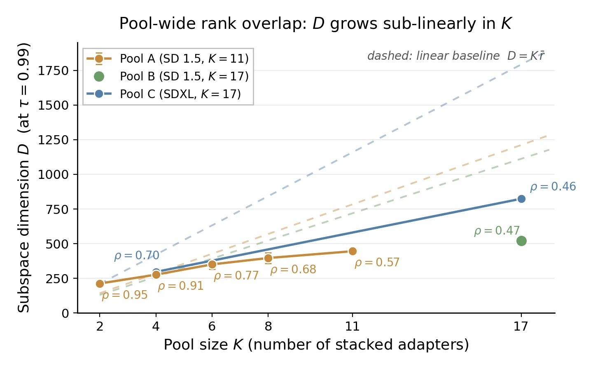
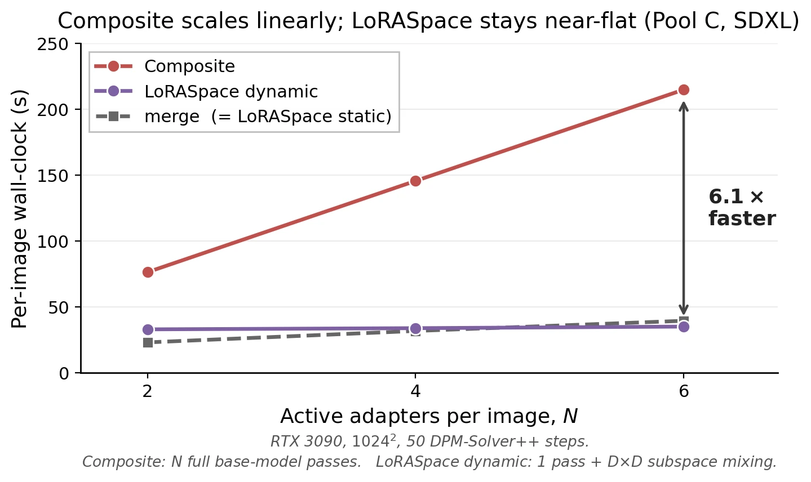

LoRAs from the same pool share most of their low-rank directions. LoRASpace stores that shared subspace once per pool and composes any subset of the pool inside it: at the cost of a single merged LoRA in static mode, or with per-token routing in one forward pass in dynamic mode.
The observation: LoRA pools overlap
Stack the low-rank factors of every LoRA in a pool and decompose them. The subspace that keeps 99% of the energy is much smaller than the sum of the individual ranks, and it grows sub-linearly as the pool grows. We measure this with the rank fill ρ = D / Σi ri, where ρ = 1 means no overlap.

| Pool | K | Σ ri | D | ρ |
|---|---|---|---|---|
| Pool A (SD 1.5) | 11 | 784 | 446 | 0.57 |
| Pool B (SD 1.5) | 17 | 1112 | 521 | 0.47 |
| Pool C (SDXL) | 17 | 1792 | 819 | 0.46 |
| LoRA-Hub (FLAN-T5) | 48 | 768 | 474 | 0.62 |
| LoRA-Retriever (LLaMA-2) | 48 | 384 | 368 | 0.96 |
Overlap follows how related the pool's LoRAs are, not the modality. The diversity-curated LoRA-Retriever pool is close to the no-overlap baseline.
How it works
The trade-off today · e.g. subject + style + scene
✓ Cheap: one pass ✗ Quality drops
✓ Keeps quality ✗ Cost grows per LoRA
LoRASpace: keep the quality, pay for one pass
Static mode: fold any combination into a single update, at the cost of a plain merge.
Dynamic mode: re-weight LoRAs per token, step or region, inside the small subspace.
quality, at the cost of a simple merge
faster than running LoRAs separately (6 LoRAs, SDXL), with one UNet pass instead of six
per pool, computed once on CPU, with no training
Under the hood
For a LoRA with factors Bi, Ai and scale si at a layer, the precompute runs once per pool:
- Normalise each LoRA's factors by their Frobenius norm and stack them across the pool.
- Take one SVD of the stacked B factors and one of the stacked A factors, and keep the leading directions that hold 99% of the energy. This gives shared bases U and V of size D.
- Re-express every LoRA inside the subspace: \hat B_i = \sqrt{s_i}\,U^\top B_i and \hat A_i = \sqrt{s_i}\,A_i V.
Static mode folds the inner sum into one update U M V⊤ added to W0. Dynamic mode evaluates it at every forward pass, with V⊤ and U shared by all active LoRAs.
Results
On Pool C (17 SDXL LoRAs, 200 combinations of 2 to 6 LoRAs, 1024², 50 steps), uniform LoRASpace scores higher than both merge and composite:
| Method | CLIP-T | ImageReward |
|---|---|---|
| Merge | 29.41 | 0.721 |
| Composite | 31.91 | 0.973 |
| LoRASpace | 32.89 | 1.040 |
In our ablation the gain comes from truncating to the shared low-rank subspace, which acts as a form of regularisation.

Composite cost grows linearly with the number of LoRAs. Dynamic LoRASpace stays nearly flat and is 6.1× faster than composite at six LoRAs, mostly because it runs one backbone pass per step where composite runs six. Static LoRASpace runs at merge cost. All timings are on one RTX 3090.
Scope
The benefit depends on how much the pool overlaps. On related diffusion pools the subspace is about half the summed rank. On the near-orthogonal LoRA-Retriever pool it barely compresses, and the LLM gains come from pairing LoRASpace with retrieval. Check ρ for your pool first: the code prints it at precompute time. The subspace is built for a given pool, so adding LoRAs means updating or rebuilding it.
Code
from loraspace import precompute_pool, LoRASpacePipeline, SpatialRouter
cache = precompute_pool(adapter_paths) # once per pool
ls = LoRASpacePipeline(sdxl_pipe, cache)
ls.compose(["character_1", "lighting_3"]) # static
ls.compose(["character_1", "lighting_3"], router=SpatialRouter(2)) # dynamic
image = ls("a portrait in dim light").images[0]Code, examples and the LLM hybrid are on GitHub. The diffusion pools are on Hugging Face, with credits to the original LoRA creators.
Citation
@inproceedings{sathiyalogeswaran2026loraspace,
title = {LoRASpace: A Pool-Wide Shared Substrate for Static and Dynamic Multi-LoRA Composition},
author = {Sathiyalogeswaran, Thamirawaran and De Silva, Navindu and Siriwardane, Chamikara and Alwis, W K and Mars, Jason and Perera Miriya Thanthrige, Udaya Sampath K. and Rodrigo, Ranga},
booktitle = {Advances in Neural Information Processing Systems},
year = {2026}
}Acknowledgements
The computational resources for this research were supported by the Accelerating Higher Education Expansion and Development (AHEAD) Operation Grant No. 6026-LK/8743-LK from the Ministry of Higher Education, Sri Lanka, funded by the World Bank. R. Rodrigo acknowledges the University of Moratuwa Senate Research Committee Grant No. SRC/LT/2021/20. We also thank Jaseci Labs for its support, and the creators of the LoRAs in our pools, credited on the dataset page.